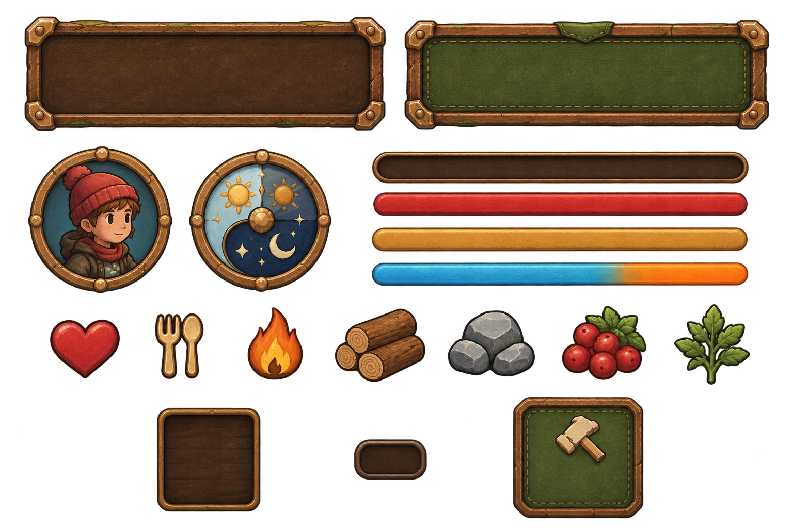
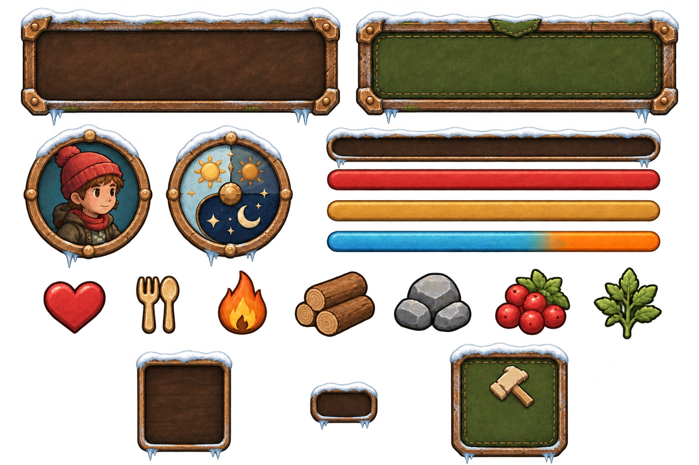

Eighteen modular components per theme, matching the supplied player-status and inventory HUD reference. Toggle to compare normal and winter art. These source atlases retain separate parts for game assembly; final crop alignment and runtime wiring remain.


Both sheets are 1536 × 1024. Both PNGs have genuine alpha transparency. Snow decorates the frames; icons and fill strips remain readable.